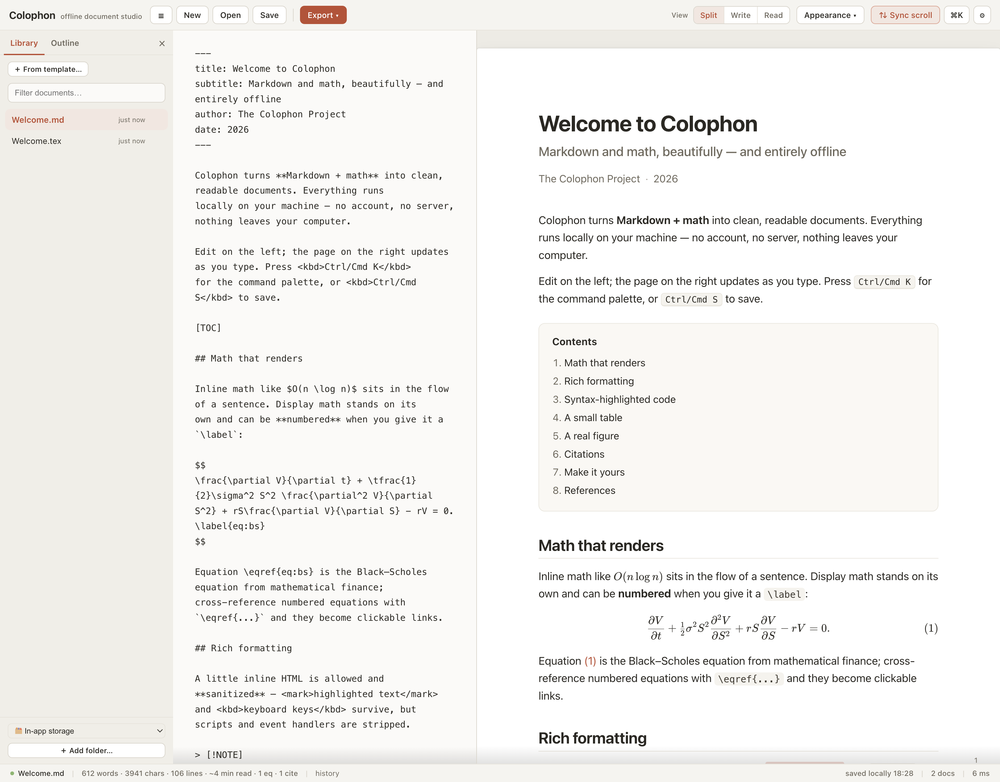
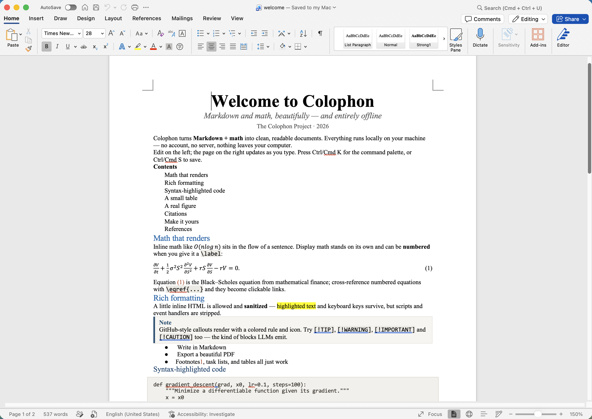

Colophon is a private document studio for Markdown with math. Write it — or paste
it straight from ChatGPT or Claude, \(…\) delimiters and all — and it renders as a
typeset page. Work in real folders on your disk, then export paper-quality PDF, standalone
HTML, or a Word file whose equations arrive native and editable, not as images. Nothing
you write ever leaves your machine.
Free · no install, no account, no server, no telemetry · your documents are
plain .md files in your own folders · the app code ships unminified
on purpose, so the privacy claims are checkable

The studio. Markdown on the left, the finished page on the right —
KaTeX-typeset math with equation numbering and clickable \eqref cross-references,
callouts, citations, syntax-highlighted code, figures loaded straight from your folder.

The same document in Microsoft Word. Every equation is a native Word equation — click into it and keep editing. Not a screenshot of math, not an image: OMML, the format Word's own equation editor uses. Both screenshots are real output of the current build — not mockups.
One local HTML file. No server calls, no account, no telemetry — claims you can check, because the application code ships unminified. Remote images in documents are blocked by default, so a pasted document can't phone home either. Exported HTML carries a strict CSP and zero scripts.
The #1 way technical documents break: equations turn into images (or garbage) on the way
to .docx. Colophon converts KaTeX → MathML → OMML so Word gets real equations.
Verified by opening exports in actual Microsoft Word — which caught three library bugs that
structural XML checks passed (three library bugs were caught this way that structural checks had passed).
Link a folder and it becomes a project: documents are plain .md files on
your disk, figures live in figs/, everything works in git, Dropbox, or a plain
backup. No import, no lock-in — the offline-Overleaf model. (Browser storage remains as a
zero-setup fallback.)
colophon.html in any modern browser — from
your Downloads folder, a USB stick, or an air-gapped machine.\(…\)/\[…\] delimiters LLMs emit. Open a .tex file
and Colophon offers a Markdown conversion, math kept intact. Link a folder to work on real
files; paste images and they land in figs/..md files on your disk that any other
tool can read (folder linking needs a Chromium browser). Without a folder, documents live in
the browser's local storage — exportable to .md anytime.\(…\) and \[…\] math render
directly, GitHub-style callouts and task lists work, and LaTeX pastes get a conversion
offer. There's deliberately no auto-"repair" feature — earlier versions had one, and it
couldn't keep up with real-world paste variants, so it was removed rather than shipped
half-working.